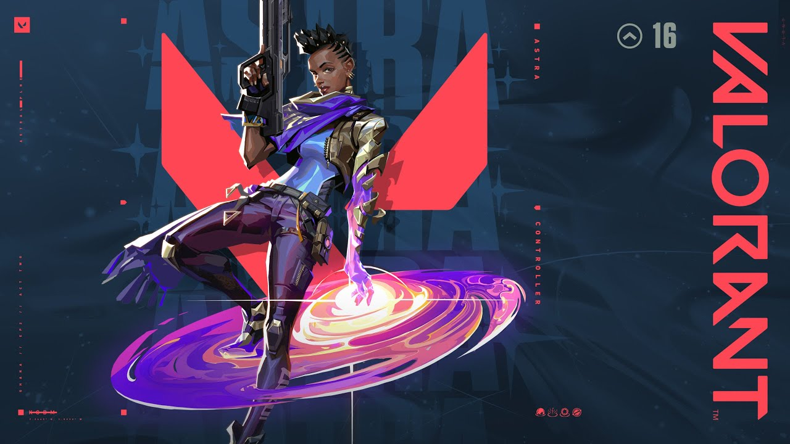

Passive(astral form)-When u press the ult butto u enter astral form where u see the whole map and u can press left click to place the stars whenever u want and u can place these stars anywhere on the map and even on the enemys site even in the buy phase.You can take back the stars as well
Ability 1(gravity well)-This ability comes from the stars u place in the astral form,when u press the ability button the star turns into wormhole which sucks the players in the middle and they become vulnerable for a short amount of time,but people like jett,raze can escape.U can use this to prevent agressive pushes.
Ability 2(nova pulse)-This ability is a concuss and comes from stars u place in the astral form and makes players vunlerable for some time,people who are in the radius of that nova pulse gets concussed
Ability 3(nebula)-This ability comes from stars u place in the astral form and is a smoke similar to brims and omens.U can place only two smokes at once.If u place 5 of ur stars u cannot make all of them smoke.
Ability 4(cosmic divide)-This ability is a wall that u place in astral form and u cannot see and shoot through this wall.This is a very big wall and can divide the whole map as well.U need to press right click to change the direction and where u want to place the wall and then press left click to activate it.